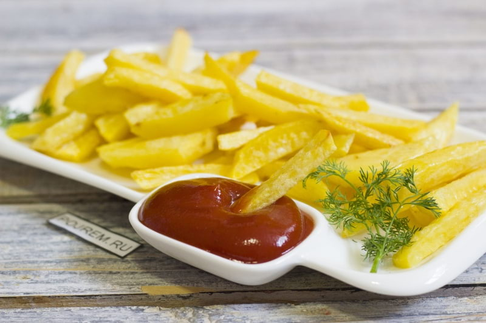
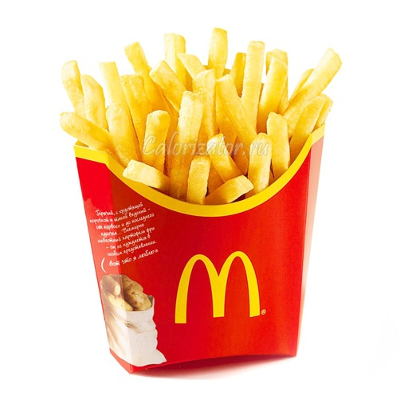

Картошка фри
Картофель фри — кусочки картофеля, обжаренные в большом количестве сильно нагретого растительного масла (фритюре) либо на животном жире. Реже в качестве фритюра используется яичный белок. Изготавливается, как правило, в специальном приборе — фритюрнице, но также иногда в духовке или аэрогриле. Картофель фри является популярным блюдом, подаваемым в заведениях фастфуда (например, McDonald’s, Burger King, KFC). Подаётся тёплым, мягким или хрустящим. Обычно является закуской. На приготовление печёного картофеля требуется меньше масла или вовсе не требуется. В Польше известна смесь картофеля фри и картофеля по-деревенскиruen в майонезе, называемая пельни брожек.
Картофель фри готовят первым пилингом и разрезают картофель на ровные полоски. Затем их вытирают или вымачивают в холодной воде для удаления поверхностного крахмала и тщательно сушат. Затем их можно обжарить в один или два этапа. Повара, как правило, согласны с тем, что метод с двумя ваннами даёт лучшие результаты. Картофель свежий, из-под земли, может иметь слишком высокое содержание воды, что приводит к сырому картофелю фри, поэтому предпочтение отдаётся пайкам, которые некоторое время были в хранилище.
В двухэтапном методе первый этап, иногда называемый бланшировкой, состоит из погружения картофеля в ёмкость с горячим жиром (около 160 °C). Ёмкость должна быть приготовлена заранее. Затем картофель более быстро обжаривается при температуре около 190 °C для того, чтобы сделать его снаружи хрустящим. После этого он помещается в дуршлаг или на ткань для осушения и соления.
Точная длительность обеих ванн зависит от размера картофеля. К примеру, для полосок 2-3 мм первая ванна занимает примерно 3 минуты, а вторая — несколько секунд. Существует несколько вариантов приготовить картофель фри. Фритюр представляет собой метод, в котором при погружении в горячий жир используется жидкое масло. Вакуумный фритюр — процесс создания низкокачественного картофеля фри, который содержит больший уровень сахара, чем обычный картофель фри.